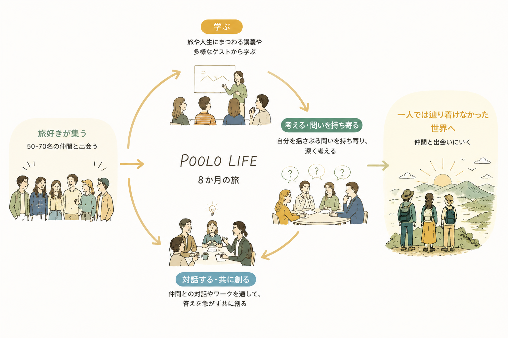
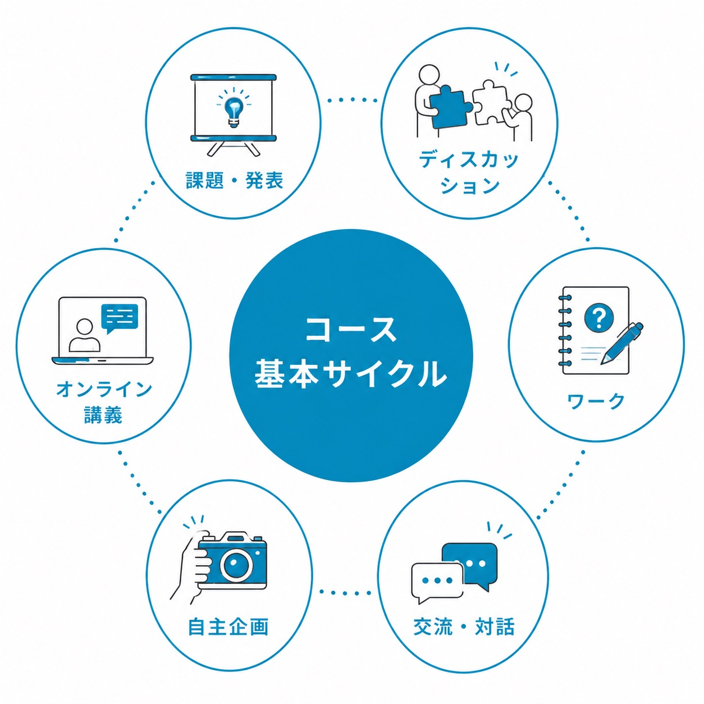

POOLO
12期生募集中！公式LINEで最新情報をお届け！
No.1–4FIRST VIEW

4
あなたの好奇心と、
今を揺さぶる勇気を問う。
今を揺さぶる勇気を問う。
📌 KV画像内に「想像もしなかった、世界と自分へ。」が焼き込み済み。No.4テキストとの併存可否は要判断（重複表示／削除／併用）
2
No.5–9SHARED QUESTION
5
SHARED QUESTION
6
「いま、何かを変えたい」と思う人。「まあ、このままでいいか」と思う人。どちらにも共通するのは、どこか満たされない気持ち。
7
家と職場を往復する日常。なんとなく過ぎていく毎日に大きな不満はないけれど、どこか物足りない。
8
そんな「今」を、「旅」と「仲間」は揺さぶってくれる。旅は、当たり前を超えるきっかけになり、1人ではたどり着けない場所も、仲間となら行ける。
9
「あなたは、ここで出会う仲間とどこまで遠くへ行きますか？」
No.10, 12–15WHAT'S POOLO
10
WHAT'S POOLO
12
POOLOは旅と人生をつなぐ、大人の学び場です。2019年に開校。旅好きの20-30代が全国・海外から集まり、累計1,000名以上が、自分の欲求（＝探究テーマ）の深堀りと実践を繰り返し、それぞれの「想像もしなかった世界」に出会ってきました。
📌 累計参加者数「1,000名以上」は12期開講時点の最新値に要確認
［POOLOコミュニティ写真］
13旅と教育をテーマにした新しい形の学校
14参加者は、旅が好きな20代・30代が中心
15オンライン開催のため全国・海外から参加可能
No.19–32ABOUT LIFE COURSE
19
ABOUT LIFE COURSE
20
旅と、問いと、共創で
想像もしなかった世界を自分に、
出会いにいく8か月
想像もしなかった世界を自分に、
出会いにいく8か月
21
POOLO LIFEは、毎期50-70名の旅好きが集まる、8か月のコースです。講義やワーク、仲間との対話を通して、自分を揺さぶる問いを持ち寄り、答えを急がずに共に創る時間を重ねていく。一人では辿り着けなかった世界に、仲間と出会いにいきます。
POOLO LIFE ／ 8か月の旅

こんな人におすすめ
22自分を出し切れていない人へ
23人生を無難にこなしてしまっている人へ
24仕事に追い込まれている人へ
25成長を追い求めてきた人へ
このコースで得られるもの
29旅の視点を通して人生の学びと実践に繋げる力
30本音で対話をできる深いつながり
31旅の原体験や人生を紐解き、強みや才能を自己理解する力
32自分軸で判断できる自己決定力と、挑戦へ一歩踏み出す勇気
No.68–85VOICE
📌 「こんな人におすすめ」（No.22-25）の4状態と1対1対応で再設計（仮ドラフト）。実名・実コメントは11期生取材で差し替え予定
68
VOICE
69
4つの状態から、出会いに
いった人たちの声
いった人たちの声
① 自分を出し切れていなかった
［参加者写真／取材後］
70
71
仲間の前で「ついつい」を仮置きしてみたら、出し切れていなかった自分の輪郭が立ち上がった
BEFORE72自分のなかにあるものを誰にも見せられないまま、日常をこなしていた。
AFTER734人のチームで仮置きを差し出すうち、輪郭がはっきりしていった。8か月後、出し切れていなかった自分が、誰かに届く言葉になっていました。
② 人生を無難にこなしていた
［参加者写真／取材後］
74
75
目標逆算ではなく「関心探究型」を選んでみたら、無難の外側に自分の景色があった
BEFORE76レールに乗っていれば失敗しない。でも、どこか面白くない毎日でした。
AFTER77旅・問い・共創の3つで揺さぶられた8か月。無難の外側で、自分で選ぶ感覚が戻ってきました。
③ 仕事に追い込まれていた
［参加者写真／取材後］
78
79
追い込まれていた毎日から、一人のエンジンと仲間の引力場で、もう一つの軸が立ち上がった
BEFORE80毎日タスクに追われ、自分の心の声が聞こえなくなっていました。
AFTER8150-70名の関心探究型の場で、自分のエンジンが少しずつ回り始めた。仕事の外に、もう一つの軸ができた8か月でした。
④ 成長を追い求めてきた
［参加者写真／取材後］
82
83
追い続けてきた自分が、「引き受ける」構えに気づいた8か月
BEFORE84ずっと「次の自分」を追ってきた。でも、追っても追っても満たされませんでした。
AFTER85自己決定、面白がる、引き受ける。3つの構えに沿って歩むうち、追わずに受け取る感覚が育っていきました。
No.88–93CTA1（無料相談）
88
まずはお気軽に無料相談へ
89明確な受講目的が定まっていない
90漠然と将来について不安
91変わりたいけど、何からすればいいかわからない
92
POOLOの詳しい内容についてや、過去の受講生の事例などをご説明させていただき、そもそもPOOLOに合っているか、受講すべきかについて、お気軽に相談しながらお話いたします。
No.94–103FEATURE
94
FEATURE
95
POOLOの探究モデルの
4つの特徴を紹介
4つの特徴を紹介
A. 学びのモデル
96
探究テーマを真ん中に、
旅・問い・共創で揺さぶる
旅・問い・共創で揺さぶる
97
自分の探究テーマを、旅で身体ごと現場に出て、問いで立ち止まって考え、仲間との共創で差し出してみる。一つだけでは届かない場所まで、3つを組み合わせて歩みます。
探究テーマ
↑↓ 揺さぶる
旅
問い
共創
B. 旅のスタンス
98
旅で身につく3つの構え。
自分で選ぶ、面白がる、引き受ける
自分で選ぶ、面白がる、引き受ける
99
旅は、3つの構えを連れてきます。自分で選び（自己決定する）、目の前を面白がり（受け入れる）、自分のものとして引き受ける（自分ごと化する）。この順番が、人生のどんな場面でも効きます。
①自己決定
自分で選ぼう
→
②面白がる
受け入れよう
→
③自分ごと化
引き受けよう
C. 人生設計のアプローチ
100
「関心探究型」という、
もう一つの人生設計
もう一つの人生設計
101
目標から逆算して、足りない自分を埋めにいく。それも一つの方法です。POOLO LIFEは、もう一つの方法を選びます。「いま、何に心が動く？」から始める、関心探究型。仮置きしながら、揺れながら、輪郭を確かめる8か月です。
★
関心探究型
いま、何に心が動く？
から始める
から始める
目標逆算型
目標から逆算して
足りない自分を埋める
足りない自分を埋める
D. 3つの掛け算
102
探究テーマ × 実践 × 場、
3つが揃って動き始める
3つが揃って動き始める
103
気になってしまう探究テーマ。それを差し出す実践（旅・問い・共創）。受け止めて、引力で動かしてくれる場（50-70名の関心探究型と、4人×3回の伴走チーム）。POOLO LIFEは、この3つが揃ってはじめて動き始めるという考えに立っています。
探究テーマ
気になって
しまうもの
しまうもの
×
実践
旅・問い
共創
共創
×
場
50-70名
4×3
4×3
↓
動き始める
No.104CTA2（無料相談・繰返）
104
※CTA1と同一構造／2回目の出現
12期生募集中！ LINEに登録して無料相談をするNo.105–137GUEST
105
GUEST
📌 12期登壇10名（鼎談1組3名含む）／2カラム・名前＋肩書のみ表示
［髙井典子］
106
髙井典子
神奈川大学国際日本学部・教授
［佐野貴］
108
佐野貴（たかちん）
株式会社TALENT 代表取締役
［最所あさみ］
110
最所あさみ
リテール・フューチャリスト／コミュニケーションデザイナー
［永井玲衣］
112
永井玲衣
作家／哲学研究者
［徳谷柿次郎］
114
徳谷柿次郎
株式会社Huuuu 代表取締役
［鼎談3名］
116
【鼎談】
小池克典＋加藤遼＋根岸泰之
小池克典＋加藤遼＋根岸泰之
越境キャリア3名
［山口絵理子］
118
山口絵理子
株式会社マザーハウス 代表取締役兼チーフデザイナー
［新井邦弘］
120
新井邦弘
株式会社地球の歩き方 代表取締役社長
これまでの登壇ゲスト
東出昌大／俳優
木本梨絵／HARKEN代表
石山アンジュ／シェアエコ協会
安斎勇樹／MIMIGURI Co-CEO
清水直哉／TABIPPO代表
三宅香帆／文芸評論家
四角大輔／作家
乙武洋匡／作家
遠山正道／スマイルズ
山口周／独立研究者
八木仁平／自己理解メソッド
前野隆司／慶應義塾大学
No.138–158CURRICULUM
138
CURRICULUM
139
8ヶ月＝3つのフェーズ。M1-M3で自分と、M4-M6で仲間と、M7-M8で社会と繋がりなおしていきます。
CURRICULUM ／ コース基本サイクル

中央に「コース基本サイクル」、6要素が循環します。
オンライン講義／課題・発表／ディスカッション／ワーク／自主企画／交流・対話
オンライン講義／課題・発表／ディスカッション／ワーク／自主企画／交流・対話
必修プロジェクト
146
豪華な講師陣によるオンライン講義だけでなく、学びや絆を深めるワーク・合宿
147
豪華講師陣によるオンライン講義は、毎回約2-3時間。様々な分野で活躍するゲスト講師に、直接質問することができます。ワークショップも設計されているため、学びの深い時間となります。また、カリキュラムの途中には、神奈川県・湘南にて1泊2日の合宿があります。オフラインで合宿することで、学びや仲間との絆が深まります。
📌 12期合宿場所「神奈川県・湘南」のままか要確認
148
繋がりを深めるチーム活動
149
POOLOは、個人ワークだけでなくチーム活動を重視します。8ヶ月のあいだに4人ずつのチームを3回組み替え、関心の近い仲間と繋がりを深めます。中盤の4ヶ月（M4-M7）は最深のチーム期間。コミュニティマネージャー（運営チーム）が並走するため、安心して活動できます。
150
アウトプットする機会や実践の場を提供
151
POOLOには、一方的なインプットという学びの形はありません。学んだことを深掘り、チームで実践・発表する。差し出して、反応を聴いて、また差し出す螺旋を、8ヶ月かけて積み重ねます。
自主企画など
152
コミュニティを活かした自由な部活動やサークル活動
153
原文未転記（11期文を流用想定／要転記）
154
参加者が自主開催するイベントや勉強会・分科会の開催
155
原文未転記（11期文を流用想定／要転記）
156
人を訪れる旅や、やりたいを実現する「あたらしい旅」の実践
157
原文未転記（11期文を流用想定／要転記）
158
過去自主プロジェクト：#1on1セッション #仕事もくもく会 #海の家での参加者BBQ #関西エリアでのPOOLOオフ会 #漫画・アニメ部 #クラフトビール部 #サーフィン部 #登山部 #地方創生部 #旅ビジネス部 #SNSマーケティング勉強会 #フリーランススキルシェア会 #100リスト会
No.159–178SCHEDULE
159
SCHEDULE
📌 表構造は「日付 × ゲスト講義内容」。日付は12期確定後に流し込み（下記はプレースホルダー）
日付
ゲスト講義内容
2026/XX/XX
キックオフ「あなたの人生観が変わる、探究と揺さぶりの世界へようこそ」
2026/XX/XX
観光研究30年の研究者が、自分の身体に残った旅の一瞬を語る夜｜髙井典子
2026/XX/XX
才能発見1万人のインタビュアーと、つい時間を使ってしまう関心の手前を聴く夜｜佐野貴
2026/XX/XX
リテール・フューチャリスト最所あさみが、未完成のまま差し出してきた10年を語る夜｜最所あさみ
2026/XX/XX
個人発表「探究テーマ」
2026/XX/XX
POOLO LIFE 合宿（DAY1-2）「コミュニティの価値」を体感する
2026/XX/XX
『さみしくてごめん』の哲学者が、合宿の後の名前のない感情を聴く夜｜永井玲衣
2026/XX/XX
Huuuu代表徳谷柿次郎が、とりあえず動いてきた最初の100回の中身を語る夜｜徳谷柿次郎
2026/XX/XX
越境キャリア3名鼎談 ― 場・橋・道具を編んできた3つの作法｜小池＋加藤＋根岸
2026/XX/XX
マザーハウス代表山口絵理子が、知らない人に届けた20年の地層を語る夜｜山口絵理子
2026/XX/XX
チーム発表「共創活動」
2026/XX/XX
地球の歩き方社長新井邦弘が、コロナ後・AI時代の旅の意味を編み直す現在地を語る夜｜新井邦弘
2026/XX/XX
POOLO LIFE 最終発表会
2026/XX/XX
メンバーで創り上げるここだけの卒業式
178
No.179–185FLOW
179
FLOW
1801. 募集開始
1812. 個別相談会（任意）
1823. 申し込み
1834. 参加費の支払い（申し込みから7日以内）
1845. 事前準備
1856. コース開始（キックオフ／初回オンライン講義）
No.186–199PRICE
186
PRICE
187
ライフデザインコース POOLO LIFE
188
参加費 185,000円（税込）
189
含まれるもの
190全16回のオンライン講義
191ゲスト講師10名による特別講義
192講義のアーカイブ動画視聴し放題
193限定Slackと限定LINEグループへの招待
194オリジナルカリキュラム＆専用ワークシート
195個人ワーク課題＆チーム課題
196コミュニティマネージャーによる活動サポート
197有志での自主プロジェクト
198TABIPPO特別ツアーに限定＆先行案内
199
No.200–205NEWS
200
NEWS
📌 12期向けの最新ニュース5本に差し替え（リード獲得イベント・募集情報など）
201
【12期リード獲得イベントタイトル】
【12期リード獲得イベントタイトル】
202
【12期リード獲得イベントタイトル】
【12期リード獲得イベントタイトル】
203
【12期リード獲得イベントタイトル】
【12期リード獲得イベントタイトル】
204
【12期リード獲得イベントタイトル】
【12期リード獲得イベントタイトル】
205
【12期リード獲得イベントタイトル】
【12期リード獲得イベントタイトル】
No.206–247FAQ
206
FAQ
207 参加方法について
208参加費の入金はいつまでに行う必要がありますか？
209授業料を支払って参加確定となります。先着順となっていますので、お早めにお支払いいただくことをオススメしています。
210支払いは、どのような方法がありますか？
211クレジットカード支払いと、銀行口座への振り込みにて対応しています。…クレジットカードでの分割支払いにも対応いたしますので、ご希望の場合はLINEにてお問い合わせ下さい。
212まだ学生ですが、参加することができますか？
213はい、学生の方もPOOLOに参加して頂くことが可能です。…
214複数のコースに参加が可能ですか？同じコースに再度参加することはできますか？
215はい、複数のコースに参加して頂くことが可能です。…
216参加上の注意はありますか？
217マルチネットワークや、反社の活動、執拗な勧誘が発覚した場合は退会になります。…
218プログラム参加費以外に発生する費用はありますか？
219課題図書の購入費用、その他イベント講義以外のサークル活動・オフ会などでの会費は別途参加者の各自負担となります。また、POOLO LIFE12期における合宿費（交通費・宿泊費など）も自費負担とさせて頂いています。
220参加は先着順ですか？定員が埋まることがありますか？
221POOLOへの参加は参加費を支払って頂いた方から先着順となります。…
222誰でも参加可能ですか？審査や選考がありますか？
223POOLOには誰でも参加することが出来ます。…
224 プログラム内容について
225自主プロジェクトの部活動やサークルについて
226自主プロジェクトは、参加者のみなさまで、主体的に自由に作って頂く活動となっています。…
227POOLO LIFEの活動期間中は、忙しいですか？
228ライフデザインコース・POOLO LIFEの活動期間は8ヶ月ですが…
229講義はオンラインですか？
230講義は全てオンラインで行います。ただし、POOLO LIFE「合宿」は、東京にてオフラインで行います。…
231Slackでのコミュニケーションはどんなイメージでしょうか？
232雑談や交流などのコミュニケーションの他にも、特定の分野についてのディスカッションやイベントなど…
233講義をあとからアーカイブ視聴することはできますか？
234はい。出来ます。講義は全てアーカイブ動画が保存されて…
235期間中はすべての講義に参加する必要がありますか？
236できるかぎり全ての講義に参加してもらうことを前提として考えていますが、事情による欠席は2回までとさせて頂いております（POOLO LIFE12期のオフライン合宿を含む）。…
237 その他について
238POOLOのキャンセル料について
239申し込み後に、参加費のお支払いをして頂きますが、参加費お支払い日より5日以内のキャンセルでしたら…
240途中で退会した場合の返金はありますか？
241大変申し訳ありませんが、コース開始後に退会となった場合には参加費の返金はございません。…
242チーム以外にも交流することはできますか？
243チーム以外の交流は、もちろん可能です。…
244POOLOの参加者属性について教えてください
245社会人がほとんどで、20代・30代が中心となり、男女比率はやや女性の方が多いです。…
246POOLOは大学ですか？オンラインスクールですか？イベントですか？オンラインサロンですか？
247POOLOは「あたらしい旅の学校」ですが、学校教育法上で定められた正規の学校ではなく…
No.248–249CTA3（無料相談）
248
気になることはLINEで何でも答えます！
249
No.250–260OTHER COURSES
250
OTHER COURSES
251
他のコースが気になる方は以下をチェック！
［POOLO NEXT KV］
252
未来の観光をアップデートする次世代リーダーコース（POOLO NEXT）
253
2030年の観光業界を担うリーダーを輩出するコース。期間3ヶ月、約15-25名。
254
［POOLO JOB KV］
255
旅を仕事の1つにするトラベルクリエイターコース（POOLO JOB）
256
旅先の経験をコンテンツ化する力と、SNS発信力を磨くコース。期間3ヶ月、25-50名。
257
［POOLO LOCAL KV］
258
地域×実現する力をつけるローカルコーディネーターコース（POOLO LOCAL）
259
地域を舞台に、色んな人を巻き込みながら、プロジェクトを実現する力をつけるコース。期間6ヶ月、30-50名。
260
No.261–264SUPPORTERS
261
SUPPORTERS
262
POOLOが実現したい社会は私たちだけでは決して成し遂げられません。企業、講師、受講生、卒業生など多くの方々と共創することで実現を目指しています。
ハワイ州観光局
サポーター2
サポーター3
サポーター4
263
ハワイ州政府から委託を請け、日本市場におけるハワイの観光促進活動を実施しています。…
264
No.265CTA4（無料相談・最終）
265
※CTA1と同一構造／最終出現
12期生募集中！ LINEに登録して無料相談をするPOOLO
あたらしい旅の学校
「旅と人生をつなぐ、大人の学び」
「旅と人生をつなぐ、大人の学び」
TOP / POOLO LIFE / POOLO NEXT / POOLO JOB / POOLO LOCAL / ENTRY
会社情報 / 利用規約 / プライバシーポリシー / お問い合わせ
Copyright POOLO All Rights Reserved.